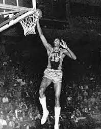
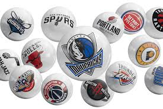

The rules of basketball, thankfully, are fairly straightforward.
However, if you’re coaching younger players, these rules can be easily forgotten once they take the floor.
The three-second rule (which we’ll discuss later in this article) is just one of many great examples.
But before you can teach the rules to your team, you must know them yourself.
So keep reading, because by the end of this article, you’ll be up to speed on all the basketball rules so you can teach your players and help them develop throughout the season!
Discover the basics
Center. Centers are generally your tallest players. They generally are positioned near the basket.
Offensive -- The center's goal is to get open for a pass and to shoot. They are also responsible for blocking defenders, known as picking or screening, to open other players up for driving to the basket for a goal. Centers are expected to get some offensive rebounds and put-backs.
Defensive -- On defense, the center's main responsibility is to keep opponents from shooting by blocking shots and passes in the key area. They also are expected to get a lot of rebounds because they're taller.
Forward. Your next tallest players will most likely be your forwards. While a forward may be called upon to play under the hoop, they may also be required to operate in the wings and corner areas.
Offensive -- Forwards are responsible to get free for a pass, take outside shots, drive for goals, and rebound.
Defensive -- Responsibilities include preventing drives to the goal and rebounding.
Guard. These are potentially your shortest players and they should be really good at dribbling fast, seeing the court, and passing. It is their job to bring the ball down the court and set up offensive plays.
Offensive -- Dribbling, passing, and setting up offensive plays are a guard's main responsibilities. They also need to be able to drive to the basket and to shoot from the perimeter.
Defensive -- On defense, a guard is responsible for stealing passes, contesting shots, preventing drives to the hoop, and for boxing out.
